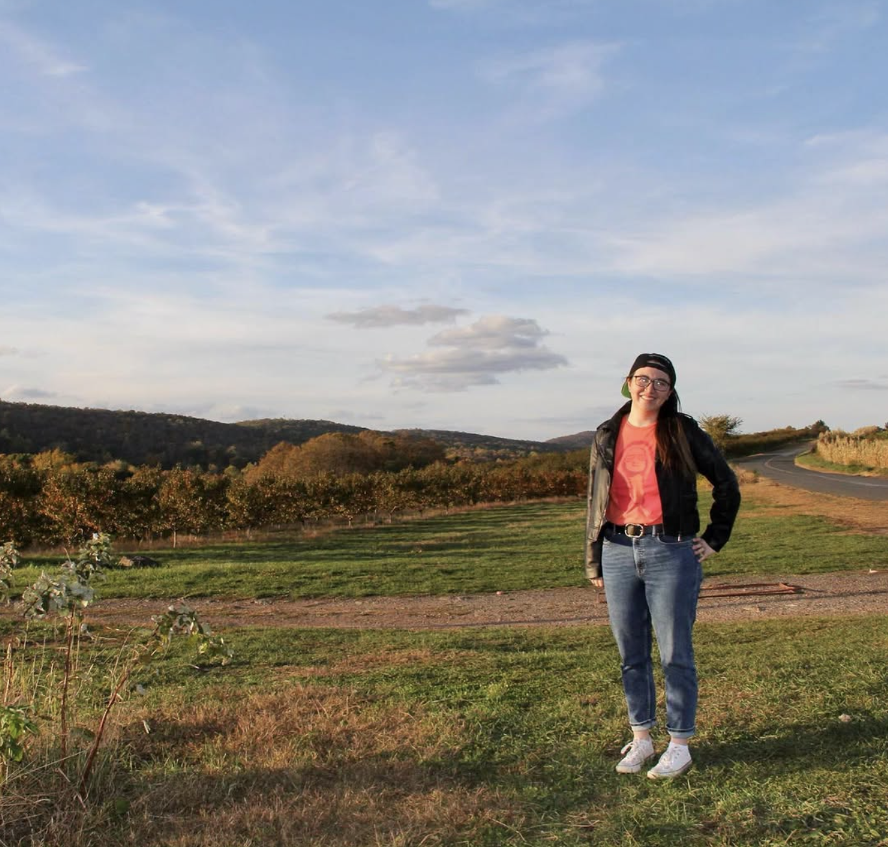

I'm an award-winning journalist, editor, and writing instructor whose work has appeared in publications including The Verge and Business Insider. All pronouns are acceptable.
I grew up in Lakeville, Connecticut, known locally as "the middle of the woods." I graduated from Brown University with honors in Literary Arts/Creative Writing, and have worked as a technology and business journalist ever since. My work has brought me to New York City, back to Lakeville, and then to South Korea, where I currently reside with my partner and cat. Along the way, I've anchored news for KBS World Radio and appeared as a regular voice on tech podcasts and panels.
Don't Print This, a queer YA mystery from Page Street YA, is my debut novel. The story grew out of many things: a lifelong passion for children's literature, a newfound appreciation for my rural upbringing after a decade of big city life, and years inside newsrooms, where I came to deeply value the necessity—but also the costs—of telling the truth.
For updates on my books and events, you can find me on Instagram at @mcwritesbooks.

When I'm not chasing my next story, I'm an avid skiing and spa enthusiast. You can also probably find me searching for cute cafés, watching cooking shows, emerging from bookstores with way more titles than I can actually carry, and helping emerging writers of all ages find the best version of the stories they dream of telling.
For food photos, cityscapes, and updates on my journalism, you can find me on Instagram at @monicawchin.